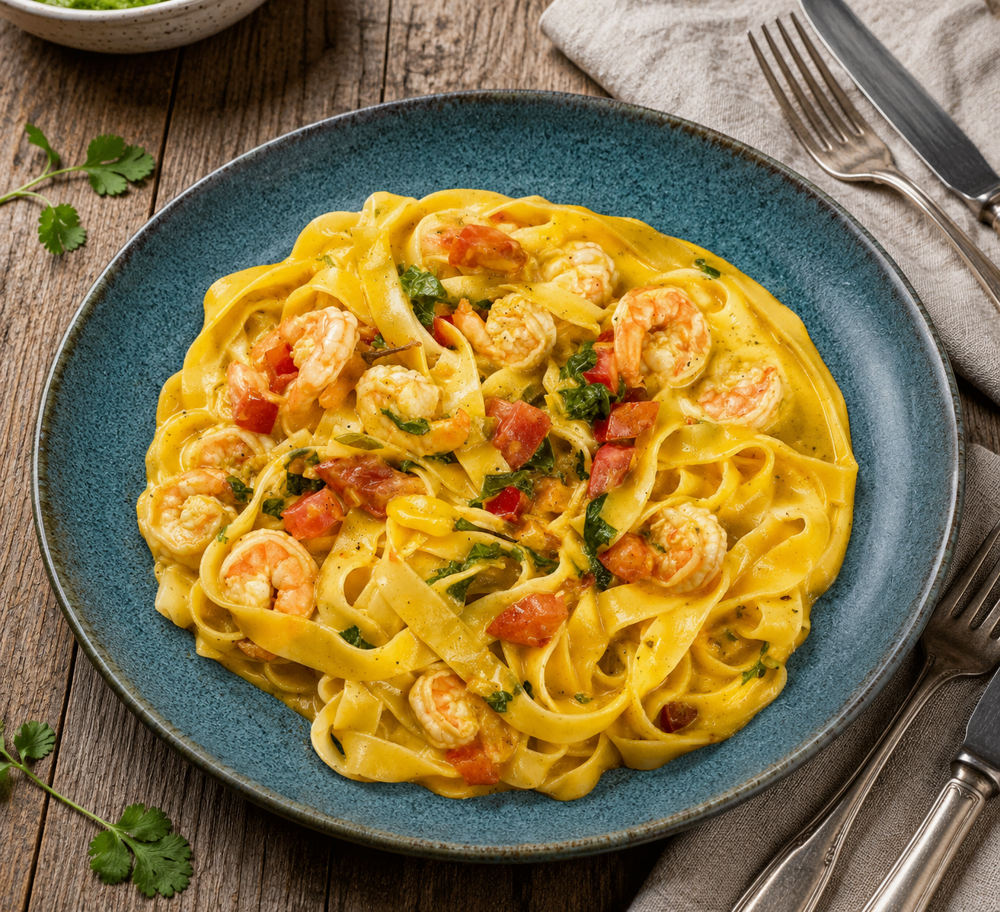
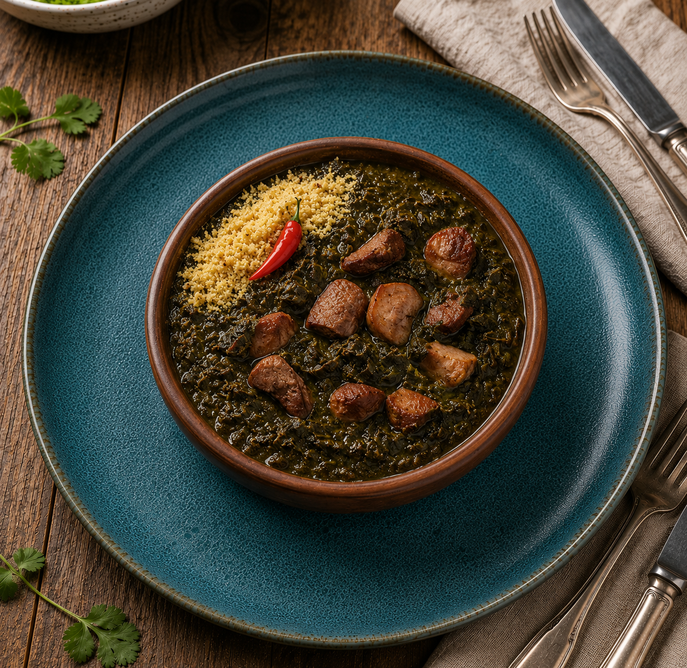
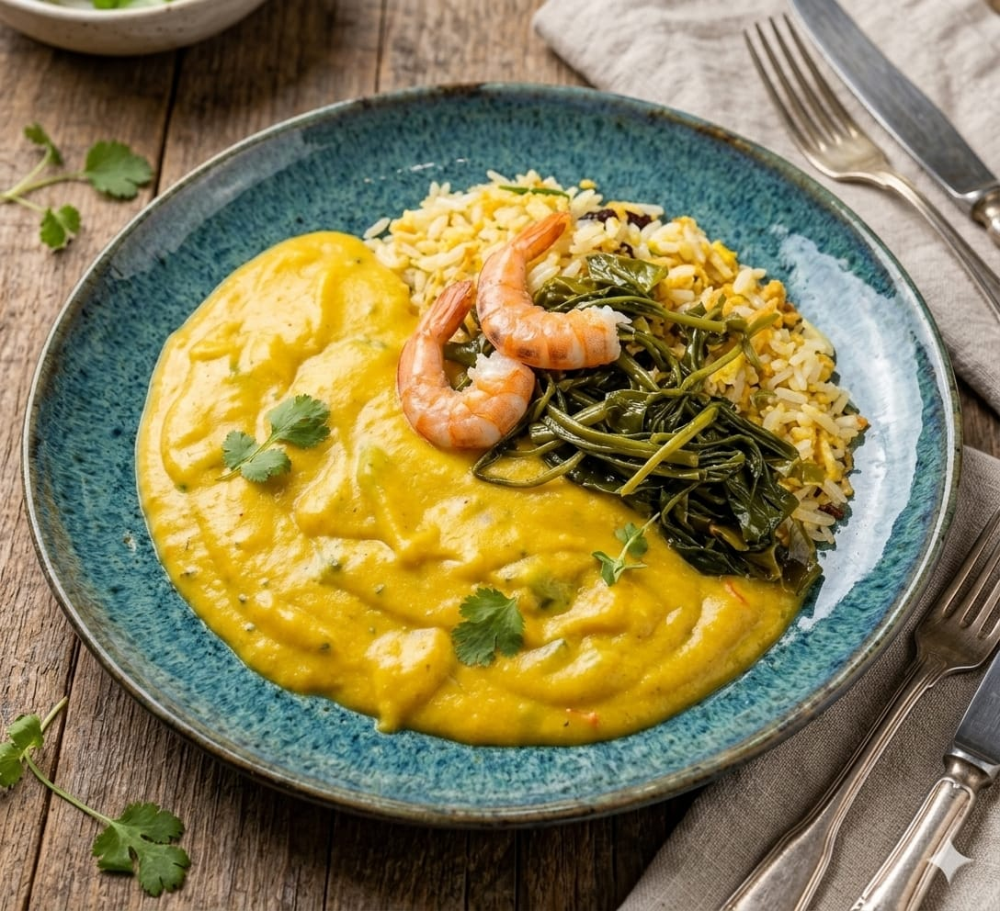
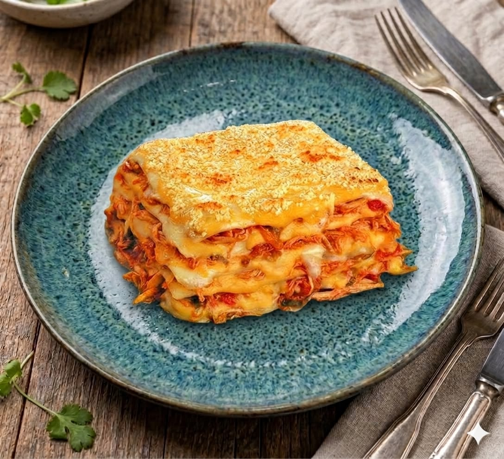
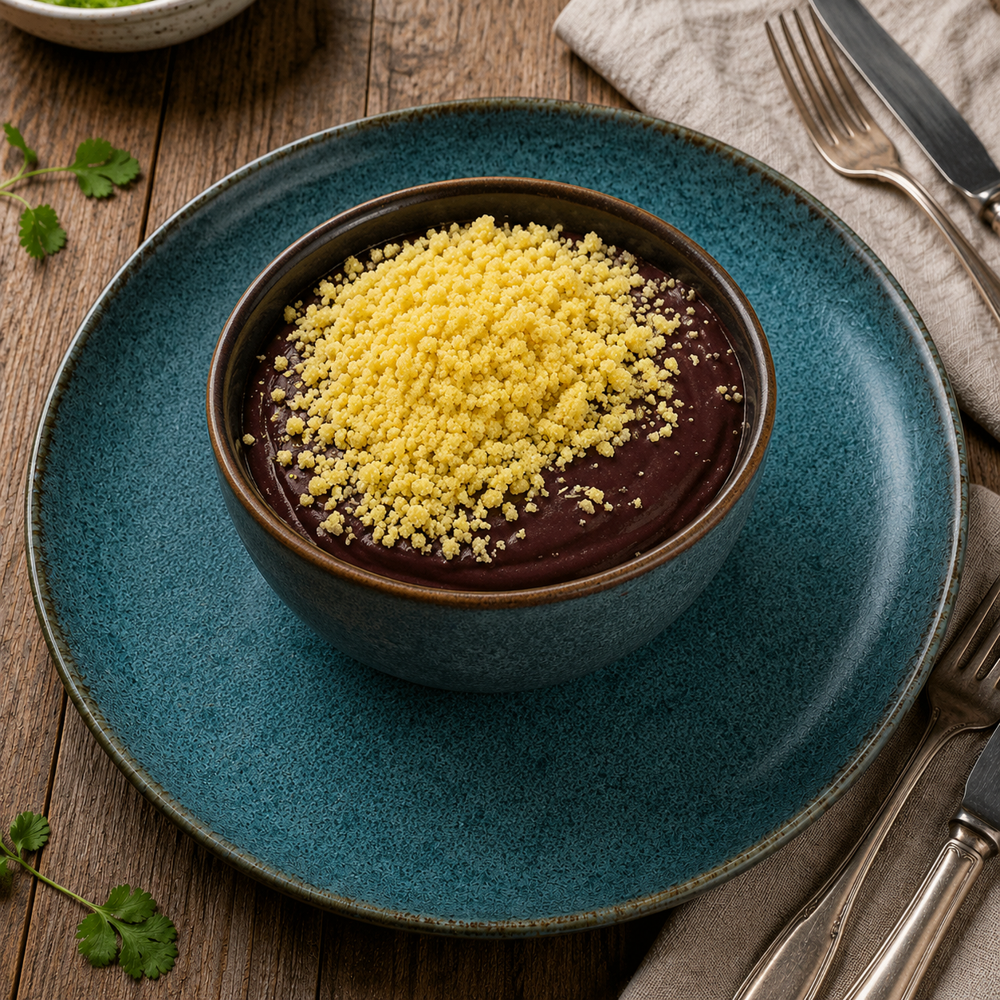
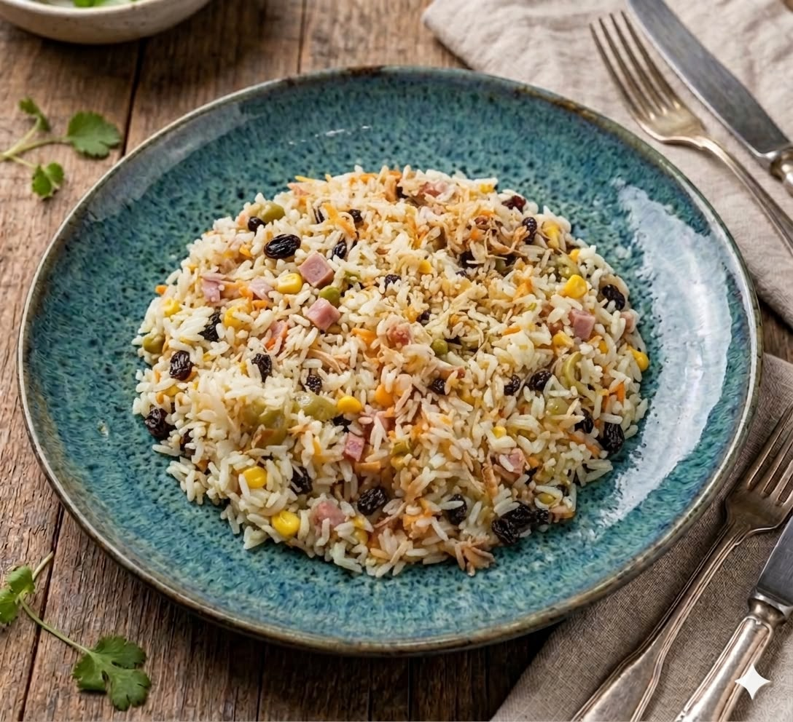

Direto dos produtores locais da região amazônica.
Nossos diferenciais
Entrega em até 40 minutos na região de Belém.
Mais de 10 anos em culinária paraense
Eleito melhor restaurante regional
Nossos pratos

Camusquim
Massa tipo talharim envolvida em um creme rico e aveludado de camarão, temperado com leite de coco e pimenta-de-cheiro.
R$ 30,00
Pedir
Maniçoba
O prato mais tradicional do Pará. Leva folhas de maniva cozidas por dias, misturadas com carnes e embutidos. Acompanha arroz branco e farinha d'água
R$ 50,00
Pedir
Vatapá
cremoso com camarão, leite de coco, azeite de dendê e temperos naturais, que traz uma textura aveludada e um sabor inconfundível.
R$ 30,00
Pedir
Lasanha de Frango
Lasanha cremosa com frango desfiado, molho branco, queijo gratinado e temperos especiais
R$ 25,00
Pedir
Açaí
R$ 30,00
Pedir
Arroz com Galinha
Arroz temperado com frango desfiado, cheiro-verde e legumes frescos
R$ 25,00
Pedir